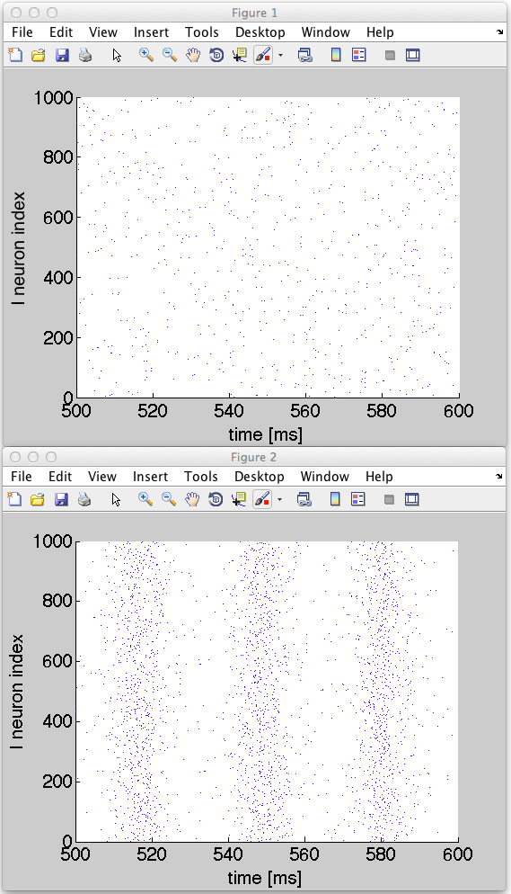

This is the readme for the model associated with the paper: Tchumatchenko T, Clopath C (2014) Oscillations emerging from noise-driven steady state in networks with electrical synapses and subthreshold resonance. Nat Commun 5:5512 This matlab code was contributed by Claudia Clopath. To run simply download and extract this archive. Start matlab and type Oscillations after cd'ing to the folder that was extracted. In less than a minute you should see figures that correspond to 4b top and bottom in the paper: 